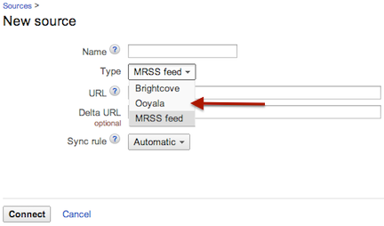

You can synch your Ooyala-hosted content with DoubleClick for Publishers (DFP) via
either the Backlot API or an MRSS feed so you can monetize it with Google IMA.
You can set up your DoubleClick for Publishers (Google DFP) account to transfer your Ooyala-hosted content, so you can monetize that
content with Google IMA V3.
All work described here (except for setting ad rules, if desired; see below) is done in DFP
itself and involves defining a new data source, which can be either via the Backlot API or an
MRSS feed.
Prerequisites and Your Decision
The following are necessary:
- A working DFP account, as required by Google.
- For syndicating via the Backlot API, have your Backlot API key and secret handy to configure
in DFP. For more details, see Your API Credentials.
Decide which approach you want: pull content via the Backlot API with your key and secret, or
use MRSS. After you decide, follow the appropriate steps for the desired option described
below.
Creating a New Source in DFP
To transfer content, you need to define a new
source in DFP. In DFP:
- Click the Video tab, then select Sources.
- After your Content Sources appear, click New
Source.
- Complete the required fields, and select the source Type. For
MRSS, select the MRSS type. If you want to pull content via the Backlot API, select the
Ooyala type.
Ad Rules
Note: Cuepoints are no longer supported for Google IMA V3. You will now set ad positions
through ad rules which are created in your DFP account.
Ad rules will define when ads are inserted, how long they should run, what ads are run, and the ad source. For matrices describing what ad rule ad positions are supported for different platforms and browsers, see Player V3 Google IMA Ad Integration.
Note: Google IMA's
AdRules feature supports ad-breaks without additional code. Do not use
AdRules with other types of ads. We highly discourage you from mixing other
adTagUrls with an AdRule adTag as it may lead to unexpected behavior. For
example, we recommend against using an AdRule adTag along with a mid-roll ad
position set via Backlot.
To enable ad rules for an ad:
- Specify your ad rules in DFP. For information on implementing DFP ad rules, go to
https://support.google.com/dfp_premium/answer/2553686?hl=en.
- To enable your DFP ad rules to correctly render for your Google IMA V3 ad with the
Backlot UI, click , and set the ad position to "ad rules" for the desired ad. For more
information on Google IMA V3 ads in the Backlot UI, see Ad Set Fields for Google IMA V3.
OR
To enable
your DFP ad rules to correctly render for your Google IMA V3 ad with the Backlot API,
set "
ad_type": "
rules" for the desired ad. For
more information see
Ad Sets.
Note: Settings applied at the page level with the ad tag url will override Backlot
settings. However, the position type (ad rule or non ad rule) must match on the page
level and in Backlot for ads and ad rules to properly render.
Synch Via Backlot API
DFP will read this metadata key and associate it with the cuepoints object on their CMS.
To syndicate content via the Backlot API, in DFP:
- From the Sources, select Ooyala.
- In the displayed input fields, enter your API key and secret.
DFP will pull each asset’s title, duration, and custom metadata from the source.

Initiate the Synch
After you set up your new source, click
Connect, and DFP will start pulling your content.
Metadata Targeting
For information on metadata targeting, please refer to Google DFP's developer documentation.